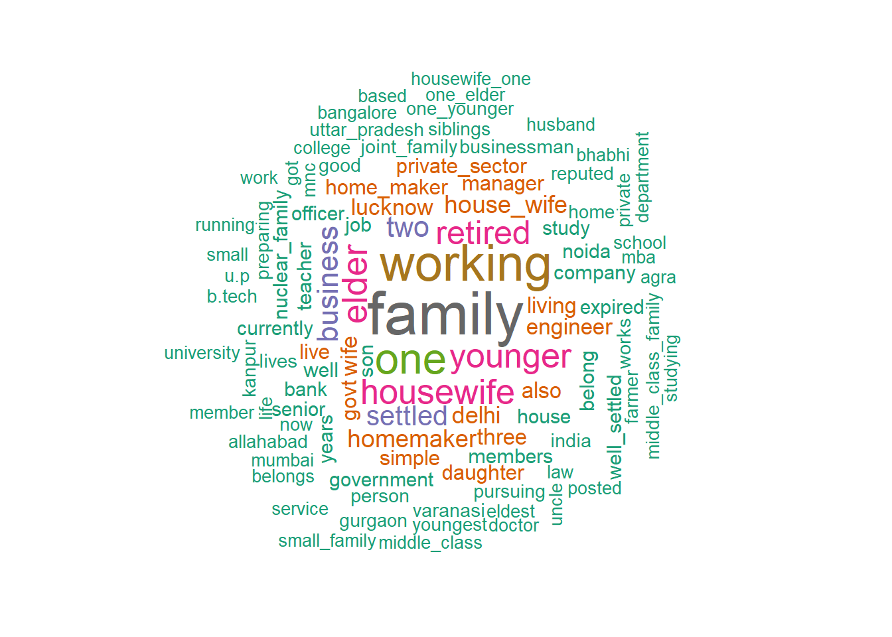
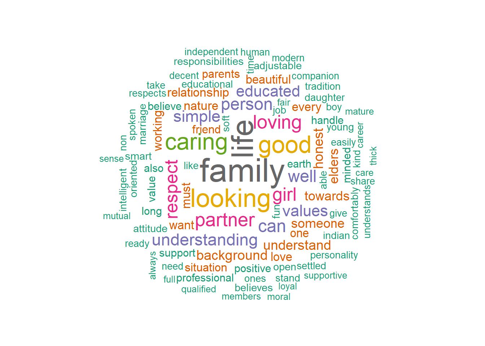
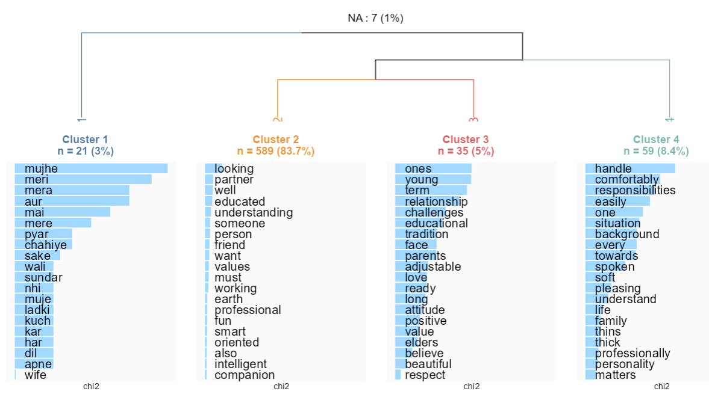

##Then we can just load the packages
library(dplyr)
library(radiant)
library(quanteda)
library(quanteda.textstats)
library(quanteda.textplots)
library(rainette)
Exploratory textual analysis
Now that we are more familiar with the database, and, hopefully, with the R environment, let’s turn to analyzing the content of the two textual variables, i.e. the family description of the spouse-to-be and the desired partner on matrimonial advertisements.
Our initial questions to solve in this tutorial are pretty basic but will guide us throughout the statistical analyses:
How are families described on matrimonial advertisements? I.e., what characteristics of families (moral values, cultural background, economic assets, …) are deemed as salient in the presentation of a spouse-to-be? Do presentations conform to one typical image corresponding to a unique norm of families or are there multiple variations of these normative presentations of one’s family?
In an exploratory textual analysis framework, this translates as asking: what are the most frequent words used to describe one’s family?
Further, what are the words that are frequently mentioned conjointly? What are the words that are less frequently mentioned together?
What are the descriptions that look similar, those that look different (in terms of word use)?
Our approach is considering each family description as a “bag of word.” In the analysis, we do not really take into account the order and sequencing of words in the descriptions (e.g. the order of words in a sentence, the sequencing of ideas in a paragraph…), we simply are interested in whether words are mentioned or not, and in the co-occurrence of these words in a description.
Family descriptions: text pre-treatment
Let’s first load our packages and our dataset.
setwd("/cloud/project")
load("sample.rdata")The first step is to transform our “text” variable in the sample database into a specific “quanteda” object called corpus:
##Transform to corpus
corpus <- corpus(sample$Desc_family)The corpus is a bundle of texts, here the 1000 different family descriptions on each different ads.
Based on this object, we can then create “tokens,” corresponding to the words of the texts. In this process, we clean up a bit our object for the analysis:
We remove punctuation (dots, commas, etc) and symbols (e.g. * $ €…) so that we do not risk considering them as words
We also decided to remove numbers written as figures (and not in letters). A different choice could have been made but I think it’s ok to remove them.
#Remove punctuation & symbols
tok <- tokens(corpus, remove_punct = TRUE,
remove_symbols=TRUE,
remove_numbers =TRUE)We also specifically remove a number of “stop words” from the analysis. These all correspond to very common words/expressions in English. We consider that they do not help characterizing the diversity of family descriptions here so we remove them from the bundle of words. We have also removed a number of very common words in these descriptions that are not very informative, relating to the description of the family members. The argument is that we are interested in what is said about the family members but not in qualifying their presence or not.
stopwords("en") [1] "i" "me" "my" "myself" "we"
[6] "our" "ours" "ourselves" "you" "your"
[11] "yours" "yourself" "yourselves" "he" "him"
[16] "his" "himself" "she" "her" "hers"
[21] "herself" "it" "its" "itself" "they"
[26] "them" "their" "theirs" "themselves" "what"
[31] "which" "who" "whom" "this" "that"
[36] "these" "those" "am" "is" "are"
[41] "was" "were" "be" "been" "being"
[46] "have" "has" "had" "having" "do"
[51] "does" "did" "doing" "would" "should"
[56] "could" "ought" "i'm" "you're" "he's"
[61] "she's" "it's" "we're" "they're" "i've"
[66] "you've" "we've" "they've" "i'd" "you'd"
[71] "he'd" "she'd" "we'd" "they'd" "i'll"
[76] "you'll" "he'll" "she'll" "we'll" "they'll"
[81] "isn't" "aren't" "wasn't" "weren't" "hasn't"
[86] "haven't" "hadn't" "doesn't" "don't" "didn't"
[91] "won't" "wouldn't" "shan't" "shouldn't" "can't"
[96] "cannot" "couldn't" "mustn't" "let's" "that's"
[101] "who's" "what's" "here's" "there's" "when's"
[106] "where's" "why's" "how's" "a" "an"
[111] "the" "and" "but" "if" "or"
[116] "because" "as" "until" "while" "of"
[121] "at" "by" "for" "with" "about"
[126] "against" "between" "into" "through" "during"
[131] "before" "after" "above" "below" "to"
[136] "from" "up" "down" "in" "out"
[141] "on" "off" "over" "under" "again"
[146] "further" "then" "once" "here" "there"
[151] "when" "where" "why" "how" "all"
[156] "any" "both" "each" "few" "more"
[161] "most" "other" "some" "such" "no"
[166] "nor" "not" "only" "own" "same"
[171] "so" "than" "too" "very" "will" #Remove stop words & words relating to specific family members
tok <- tokens_remove(tok,c(stopwords("en"),"mother","father","mom","dad","sister","sisters","bro","sis","brother","brothers","married","unmarried","parent","parents"))Because I wanted a have clean and easily interpretable analysis, I removed words of less than 3 letters.
#Keep words with at least three letters
tok<-tokens_select(tok,min_nchar=3)Next, I create a “document-feature matrix” based on the counting of each “token” in each text. For instance, text 1 (family description of the first row in the sample database), corresponds to the following family description:
“Our Family is very simple and having moderate values..I am retired Bank employees. My wife Kirtima Vaish is a homemaker and my two younger sons IT professionals . His youngest Brother in TCS San Francisco U S A. Second Youngest Brother coordinater in Sankalp India . Now we are living in Bangalore. He is currently living in Bangalore .We have two houses,one in Bangalore and another one in Faizabad.”
After applying the corpus, token and pre-treatment, this amounts to counting for this text that family is a token mentioned once, simple is mentioned once, moderate once, etc… (the full matrix is not depicted here it has more columns and of course more rows).
#Create document-feature matrix (keep in lower case)
dtm <- dfm(tok, tolower = TRUE)Again, I now apply quite an arbitrary rule by retaining only the tokens that are mentioned at least ten times in all the corpus. I do this so that rarely frequently mentioned tokens do not structure heavily the output of the analysis.
#Keep relatively frequent terms
dtm <- dfm_trim(dtm, min_docfreq = 10)Textual analysis
A word cloud as a first naive exploration
After all this hard work, let’s conduct our first exploratory analysis! First, let’s just plot a word cloud where the size of words is proportional to their frequency in the corpus.
#First a word cloud
textplot_wordcloud(dtm, random_order = F, rotation = 0.25,min_size =1,max_words = 100,
color = RColorBrewer::brewer.pal(8, "Dark2"))Unsurprisingly, family is the most frequent term! Followed by younger, elder, probably characterizing “younger brother/sister”.
The other words all relate to the economic position of the household, either in terms of activity status (retired, housewife, working), occupation (engineer, business), economic sector (private/government sector) or social class (middle class). The other frequent words but relatively less (in green) also indicate the same kind of words to describe one’s family, with the addition that location also seems quite salient (Delhi, Bangalore…).
The word cloud is thus not only a nice plot, it is also informative on what are the most frequent tokens used, possibly indicating the most frequent topic in these descriptions. Here, it seems that when describing their family, spouse-to-be talk about the family economic position (and not about say, the hobbies of the family members).
Reinert’s method: clustering family descriptions
Next, we turn to a more complex statistical tool to analyse the diversity of the family descriptions. Based on the “document-feature matrix,” we use the chi-square distance to calculate the similarities and differences between family descriptions. The method is based on an algorithm of Divisive Hierarchical Clustering (DHC), which can be described as such:
We split the documents into two groups, such that the two groups are as “different” as possible.
This difference is achieved by the fact that tokens that are frequently mentioned in one group are not frequently mentioned in the other group and vice versa.
From the two groups of documents, the largest group is again split up into two groups.
From the three groups of documents, the largest group is again split up into three groups.
Etc…
A more complete and precise description of the algorithm can be found here.
This step is achieved by running the following R command (here I ask the algorithm to split the documents into a maximum of six groups):
res <- rainette(dtm, k = 6)Warning in rainette(dtm, k = 6): some documents don't have any term, they won't
be assigned to any cluster. Clustering... Done.How many groups or clusters of documents should we keep in the final partition?
This is an exploratory tool so the best way is to first analyse the two groups and interpret how they are different from each other, then the three groups, etc… At each step, we analyse what distinction emerges with the new cluster.
As a rule of thumb:
Keep as many groups as you can interpret them
Remember that your goal is to be able able to interpret distinctions in your corpus so it is not ideal to have too many clusters! Personally, I find that beyond 8-10 clusters, classifications are not informative as it is hard to grasp at a glance the full distinctions.
Let’s now have a look at the clusters of documents and how they are structured by distinct tokens. This is done by a very nice shiny app:
rainette_explor(res, dtm=dtm, corpus_src=corpus)A new window pops up. Let’s set the cursor to two clusters. The DHC has cut the family descriptions into a cluster gathering 82 percent of the descriptions and another one corresponding to 18 percent of the descriptions (notice that 15 clusters could not be assigned to any cluster because after pre-treating the texts, they did not contain any relevant term).
Each cluster is characterized by its most specific tokens, i.e. broadly said the tokens that are often mentioned in the first cluster but not in the second cluster.
The first cluster corresponds to the descriptions that mention “family”, while this term is not frequently mentioned in the second cluster… The second one corresponds to descriptions that frequently mention “one”… These are not very informative tokens. One could think of re-running the analysis by adding these terms to the stop word list.
The first cluster is characterized by the phrases “middle class”, “simple values”, “nuclear family”, “manager”, “homemaker”…
The second one is characterized by the terms “housewife”, “farmer”, “private sector”, “business”…
As it may be difficult to interpret the specificity of each cluster, it may be good to come back to the descriptions and so how the most specific terms are used in the sentences. On the bottom right of the shiny app panel, you can click on “Cluster documents:”
Here we look at the first cluster and how the token “middle” is used. It pops up with the phrase “middle class”. Matrimonial ads of the first cluster specifically describe their family as being a “middle class” one.
We can now turn to analyse three clusters, four clusters etc… I here stop at four clusters which I find informative and rather distinct from each other. It is nice to try to label them to summarize the interpretation.
The first cluster corresponds to the clusters of “Family composition and values” (32 percent of the descriptions)
The second cluster seems to be mostly about studies high professional achievements: “Family members’ educational curriculum and professional achievements” (31 percent)
The third cluster frequently has mentions of the army, the government sector and the mother/wife is often described as a “housewife”, we can label it the “Male members’ position in the army/govt sector and housewife female members” (20 percent)
The fourth cluster again corresponds to a frequent use of the token “housewife” and the work positions correspond more to private ones (business, farmer): “Male members’ private sector position and housewife female members” (18 percent)
All in all, all these types of family descriptions suggest that family is mostly described in terms of the socioeconomic achievements of the family members. The first cluster comes as an exception as the cluster insists more on family values, but even the family’s socioeconomic position is described as a whole with the very frequently used term “middle class”.
Do these four types of family descriptions correspond to different characteristics of the matrimonial advertisements? For instance, are profiles managed by family members rather than the spouse-to-be associated to certain types of family descriptions?
To investigate this question, we save the clusters to our sample database as a new variable which we are going to open in the radiant app.
###Decide to keep the partition in 4 classes
sample$cluster <- cutree(res, k = 4)save(sample,file="sample2.rdata")
#Explore how these clusters correspond to specific profiles (male/female, ...)
radiant::radiant_window()After loading the “sample2.rdata” file in the radiant app, we use the “Pivot” tab to investigate the associations between family description types and other matrimonial ad characteristics.
As can be seen from the pivot table and the plot, profiles run by the spouse-to-be themselves are slightly more often characterized by the first type of description (family composition and values). This is also the case of “others” who correspond to marriage brokers: they seem to reproduce a form of non-specific and general type of family description that corresponds to the ideal of a family.
The second (and also to a certain extant, the third) type of family descriptions (educational and professional achievements) is more characteristic of family members (parents and siblings). Insisting on the high educational and professional achievements is more salient to these members (than to the spouse-to-be themselves) who may be seeing marriage as a pure assortative matching process in terms of socioeconomic sorting.
The fourth type is a more spouse-to-be specific family description type.
You can explore other salient distinctions.
Compound tokens?
One thing we have noticed in the course of this analysis is that some words come as single and separate tokens whereas they come as phrases, such as middle class, government sector, etc. We can try and detect these compound tokens and treat them as single terms in the analysis.
tok <- tokens(corpus)
col <- tok |>
tokens_remove(c(stopwords("en"),"mother","father","sister","sisters","mom","dad","bro","sis","brother","brothers","married","unmarried","parent","parents")) |>
tokens_select(pattern = "^[A-Z]", valuetype = "regex",
case_insensitive = T, padding = TRUE) |>
quanteda.textstats::textstat_collocations(min_count = 5, tolower = T)
head(col) collocation count count_nested length lambda z
1 house wife 88 0 2 6.085893 29.45430
2 private sector 58 0 2 6.526536 25.53734
3 middle class 83 0 2 9.192984 22.43732
4 home maker 54 0 2 7.807280 22.32270
5 well settled 44 0 2 4.511104 21.74900
6 working private 57 0 2 4.561429 21.12930comp_toks2 <- tokens_compound(tok, pattern = col)
comp_toks2<-tokens(comp_toks2,remove_punct = T,remove_symbols=TRUE,
remove_numbers =TRUE)
comp_toks2 <- tokens_remove(comp_toks2,c(stopwords("en"),"mother","father","sister","sisters","mom","dad","bro","sis","brother","brothers","married","unmarried","parent","parents"))
comp_toks2<-tokens_select(comp_toks2,min_nchar=3)
dtm <- dfm(comp_toks2, tolower = TRUE)
dtm <- dfm_trim(dtm, min_docfreq = 10)
textplot_wordcloud(dtm, random_order = FALSE, rotation = 0.25,min_size =1,max_words = 100,
color = RColorBrewer::brewer.pal(8, "Dark2"))
res <- rainette(dtm, k = 6)
rainette_explor(res, dtm=dtm, corpus_src=corpus)Textual analysis of the desired partner
Next, let’s turn to the descriptions of the desired partner.
The “script” of the ideal partner
We use the same procedure and pre-treatment by running the code below. In the word cloud of the most frequent terms, do the adjectives look any family to gender scripts of the ideal desired matched partner?
corpus <- corpus(sample$Desc_desiredpartner)
#Remove punctuation & symbols
tok <- tokens(corpus, remove_punct = TRUE,
remove_symbols=TRUE,
remove_numbers =TRUE)
#Remove stop words & words relating to specific family members
tok <- tokens_remove(tok,c(stopwords("en")))
#Keep words with at least three letters
tok<-tokens_select(tok,min_nchar=3)
#Create document-feature matrix (keep in lower case)
dtm <- dfm(tok, tolower = TRUE)
#Keep relatively frequent terms
dtm <- dfm_trim(dtm, min_docfreq = 10)
#First a word cloud
textplot_wordcloud(dtm, random_order = FALSE, rotation = 0.25,min_size =1,max_words = 100,
color = RColorBrewer::brewer.pal(8, "Dark2"))
Interestingly, when classifying the desired partners, even with four clusters, we still have 84 percent of the desired partner descriptions that come in the same cluster. Notice how one cluster emerges because the words are not English terms but Hindi ones (transliterated in English).
res <- rainette(dtm, k = 6)
rainette_explor(res, dtm=dtm, corpus_src=corpus)Stratifying by gender
Instead of trying to analyse whether these clusters correspond a posteriori to male or female scripts of the ideal partner, we may want to stratify a priori our sample between male and female profiles and see whether the aspirations of the desired partner are any different.
With the word cloud, try to interpret the gendered aspirations of the desired partner!
# Textual analysis of the desired partner differentiating by gender---------------------------------------------------------
#First, add the sex information to the corpus
docvars(corpus, "Sex") <- sample$Sex
tok2 <- corpus %>%
corpus_subset(Sex %in% c("Male", "Female")) %>%
tokens(remove_punct = TRUE,
remove_symbols=TRUE,
remove_numbers =TRUE) %>%
tokens_remove(stopwords("en")) %>%
tokens_select(min_nchar=3)
dfmat2 <- dfm(tok2,tolower=T) %>%
dfm_group(Sex) %>%
dfm_trim(min_termfreq = 3)
textplot_wordcloud(dfmat2, comparison = TRUE, min_size =1,max_words = 40,
color = c("darkgreen", "darkorange"))We can also look at the list of the most typical tokens used by female and male profiles respectively:
#The most typical tokens of female profiles regarding desired partner
head(tstat1 <- textstat_keyness(dfmat2), 20) feature chi2 p n_target n_reference
1 person 88.73288 0.000000e+00 115 62
2 boy 60.00697 9.436896e-15 32 2
3 settled 45.34756 1.649936e-11 31 6
4 non 34.88173 3.503534e-09 23 4
5 commitment 34.16181 5.071440e-09 18 1
6 thin 27.86034 1.303954e-07 15 1
7 compatible 26.59534 2.508482e-07 16 2
8 dashing 26.59534 2.508482e-07 16 2
9 guy 26.53958 2.581939e-07 14 0
10 trust 24.54023 7.277429e-07 15 2
11 worthy 24.43152 7.699868e-07 13 0
12 amiable 21.64150 3.286631e-06 15 3
13 human 21.46010 3.612676e-06 22 9
14 honest 18.19730 1.991611e-05 57 55
15 smoker 18.11712 2.077257e-05 10 0
16 understanding 17.82373 2.423418e-05 79 88
17 supporting 16.05262 6.160646e-05 12 2
18 drinker 16.01698 6.277705e-05 9 0
19 man 14.09676 1.736429e-04 11 2
20 provide 12.80994 3.447829e-04 9 1#The most typical tokens of male profiles regarding desired partner
tail(tstat1 <- textstat_keyness(dfmat2), 20) feature chi2 p n_target n_reference
591 life -7.468835 6.277617e-03 117 329
592 believe -7.858283 5.058840e-03 8 47
593 challenges -8.070330 4.499591e-03 0 17
594 term -8.545806 3.463192e-03 0 18
595 friend -8.800662 3.011213e-03 10 56
596 nature -8.932972 2.800682e-03 16 75
597 career -9.574547 1.972935e-03 1 25
598 soft -9.841418 1.706259e-03 3 34
599 spoken -10.513976 1.184751e-03 1 27
600 simple -11.848578 5.770540e-04 31 128
601 members -12.352622 4.403675e-04 0 26
602 understand -13.057711 3.020383e-04 18 93
603 ready -13.305163 2.646763e-04 0 28
604 easily -13.570601 2.297558e-04 2 38
605 comfortably -13.815948 2.016176e-04 1 34
606 responsibilities -20.459909 6.089347e-06 0 43
607 adjustable -20.937564 4.744981e-06 0 44
608 family -37.486838 9.203195e-10 98 401
609 beautiful -37.708634 8.214018e-10 0 79
610 girl -96.464509 0.000000e+00 1 205Finally, we may want to classify the desired partner description of male and female profiles separately:
##Exploratory analysis of men
dfmat2male<-tokens_subset(tok2, Sex=="Male") %>% dfm(tolower=T) %>% dfm_trim(min_termfreq = 3)
corpusmale<-corpus_subset(corpus,Sex=="Male")
resmale <- rainette(dfmat2male, k = 6)
rainette_explor(resmale, dtm=dfmat2male, corpus_src=corpusmale)
For the female profiles:
##Exploratory analysis of women
dfmat2female<-tokens_subset(tok2, Sex=="Female") %>% dfm(tolower=T) %>% dfm_trim(min_termfreq = 3)
corpusfemale<-corpus_subset(corpus,Sex=="Female")
resfemale <- rainette(dfmat2female, k = 6)
rainette_explor(resfemale, dtm=dfmat2female, corpus_src=corpusfemale)What differences do you notice?
What would you do if you wanted to analyse the descriptions according to who runs the matrimonial profiles?